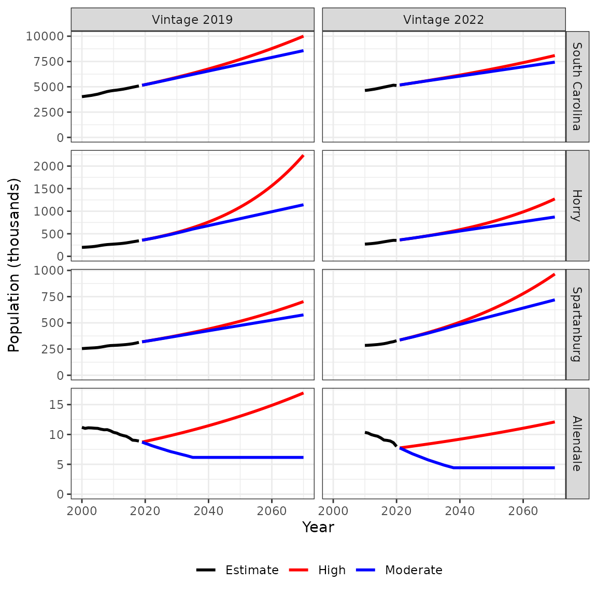

Two editions, or “vintages,” of the SC RFA projections are included in this package, 2019 and 2022. Both editions have been used as inputs to the River Basin Plans which have been developed in South Carolina over this time. Each edition of the RFA projections includes a single scenario which extends 15 years. For the purpose of long-term water planning, the projections are extended to 2070, and an additional scenario of high population growth has been developed. The graphs below illustrate both editions of the results, at a state-wide level and for several example counties.

For each edition of the RFA projections, the RFA population numbers are represented by the “Moderate” scenario. The Moderate scenario is intended to represent a probable scenario of moderate growth. The “High” scenario is intended to represent a plausible, but unlikely, scenario of high growth. It is an extrapolation based on simple methods. Overall, the population of South Carolina is projected to continue growing, but the more recent projections are generally lower than the earlier edition.
Horry county is an example of a rapidly growing population which is no longer projected to grow as rapidly. The difference is most clear in the High scenario. Stakeholders in the Pee Dee basin noted that the earlier edition of the High scenario in Horry county seemed unrealistically high, and the updated edition seemed more realistic.
Spartanburg county is an example of a rapidly growing county which is now projected to grow even faster. Stakeholders in the Broad basin had commented on the earlier edition of the projections that the High population scenario seemed more realistic than the Moderate population scenario in Spartanburg county. The updated projections appear to align more closely with their expectations.
Allendale county is an example of a shrinking population. For the purposes of long-term planning for water availability at a basin-wide scale, it is generally important to plan for growth. In the High scenario, all counties grow at least 10% faster than the statewide average projected by SC RFA. In the Moderate scenario, declining populations are projected to stabilize at the end of the SC RFA projection period.
The SC RFA publishes their population projections approximately a year after the population data is released (by the US Census). Thus, the “vintage” of the data precedes the year of publication.